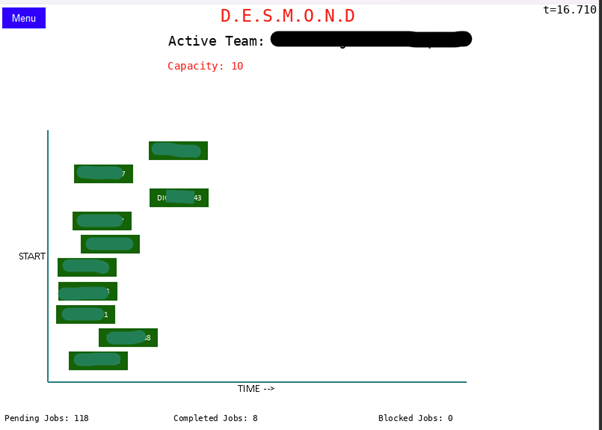

Discrete Event Simulation Model Over Normal Distribution
Salabim model to simulate a 90 day period of Agile delivery
A redacted screenshot from the in-built animation, showing workitems moving left to right over time until completion. New work enters the queue if there is capacity until the 90 day limit is reached.
